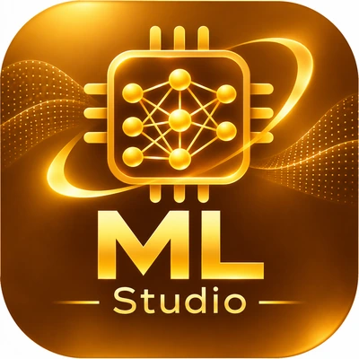

Machine learning software
Sign Language ML Studio
A lightweight, CPU-friendly graphical environment for exploring sign language recognition using labeled examples. Designed for users without programming experience and offered for Windows and macOS.
Download for Windows and macOS ↓Overview
Sign Language ML Studio is intended to lower the barrier to using machine learning in language research and teaching. Rather than requiring users to develop a model-training application from scratch, the software offers a graphical environment for exploring recognition tasks with labeled examples.
The project is informed by my work with researchers and students who have valuable sign language expertise but limited experience with programming or machine learning tools. It is designed for CPU-friendly introductory experiments on ordinary Windows and Mac computers without requiring a dedicated GPU. Actual speed will depend on the dataset and computer.
By keeping the workflow approachable and hardware requirements modest, I hope more people can experience machine learning directly. The tool is not intended to replace linguistic expertise or careful model evaluation.
Typical Workflow
- 01
Prepare examples
Organize samples and the vocabulary or labels relevant to a study.
- 02
Try a model
Explore machine-learning-based recognition using the application's guided workflow.
- 03
Review results
Inspect recognition outputs and consider limitations of the available training data.
Applications
- Teaching introductory machine learning with sign language examples
- Prototyping recognition tasks with user-defined labels
- Supporting exploratory analysis by researchers with limited coding experience
Download
Sign Language ML Studio for Windows and macOS
Select your operating system and preferred interface language. Windows packages are executable (.exe); macOS downloads are disk images (.dmg).
These releases are intended for educational and exploratory use, not for validated sign-language interpreting. Downloads are hosted on GitHub Releases. Mac users should open the DMG and follow the included installation instructions; performance and platform compatibility may vary.